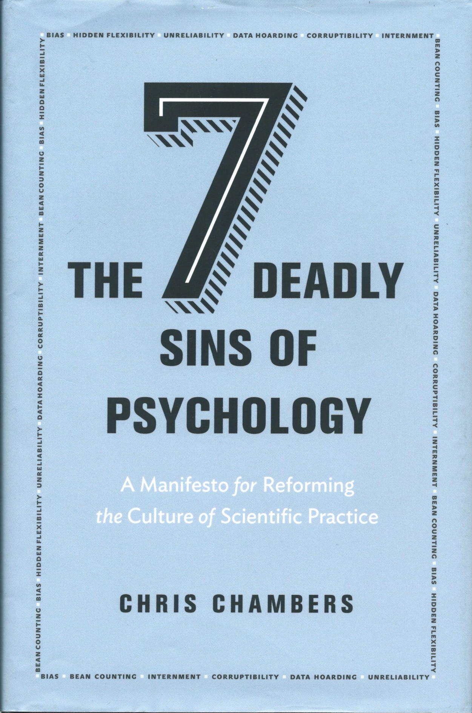

An Open Science initiative at Penn State
Rick Gilmore, Frank Hillary, & Nicole Lazar
2023-02-14
Rick Gilmore, Professor of Psychology
Frank Hillary, Professor of Psychology
Nicole Lazar, Professor of Statistics

Briana Wham, Research Data Librarian - STEM, University Libraries





Have you heard of the ‘reproducibility crisis’ in science?

Is there a reproducibility crisis in your area of research?


What is your primary department or unit?

What is your position at Penn State?

What is the highest post-secondary degree you have earned?

How many years have passed since you completed that degree?

What is your experience with/knowledge of open science practices?

Describe your awareness of the FAIR (findable, accessible, interoperable, reusable) principles pertaining to research data

Do you apply FAIR principles in your own data management and sharing practices?

What are the primary types of digital data that are used in your research?


Do you collect data that have legal or ethical restrictions governing who may access it or how it may be used?

Where do you store data for active projects where data collection and analysis is still ongoing?

How important to you is sharing data from active projects with research collaborators at Penn State or outside of Penn State?

How convenient is it for you to share data from active projects with research collaborators at Penn State or outside of Penn State?

How often do you share computer scripts or data analysis code with direct research collaborators ?

How important to you is sharing data from completed projects with the broader research community (i.e., not direct collaborators)?

Which of the following obstacles make sharing data with the research community harder for you?

If you have shared data with the research community, where have you shared it?

How often do you openly share other materials related to your research (protocols, reagents, samples, apparatus, designs, etc.) with other researchers?

Do research funders in your field require data sharing?

Do journals in your field require data sharing?

Do funders in your field require code sharing?

How much benefit would you derive from a center at Penn State focused on supporting the adoption of best practices in data management and sharing, code sharing, open science, and reproducible research?

Select the services that would most benefit your research if offered by such a center.